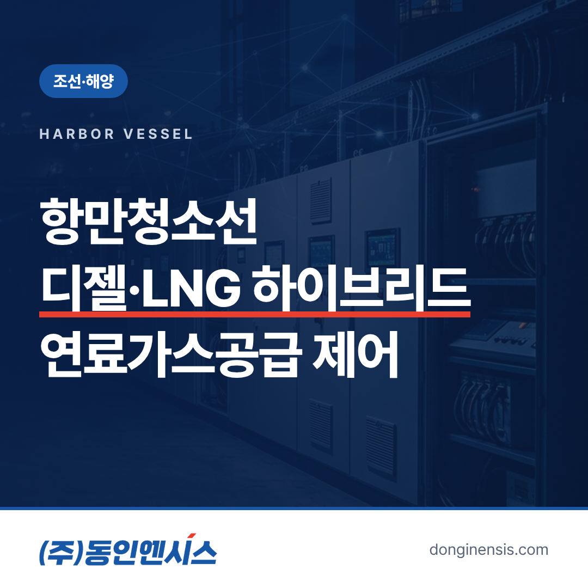
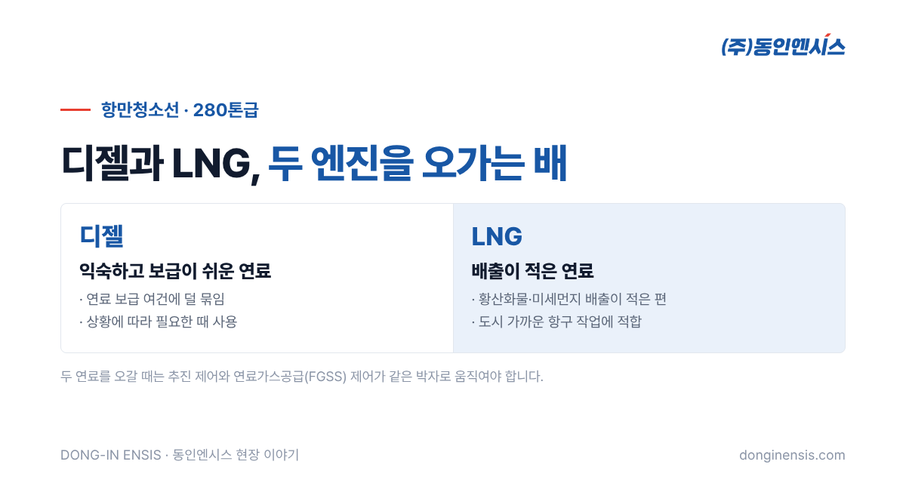
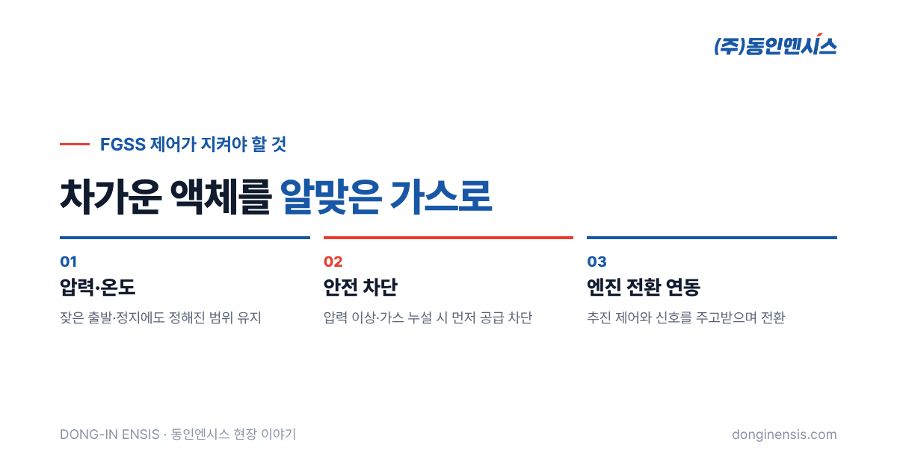

항구에 떠다니는 쓰레기와 기름띠는 누가 치울까요? 그 일을 맡는 배가 항만청소선입니다. 부산에서 1991년부터 선박과 육상 플랜트의 제어반을 설계·제작해 온 동인엔시스는 여수지방해양수산청의 280톤급 항만청소선에서 디젤과 LNG 엔진을 함께 쓰는 하이브리드 추진의 연료가스공급(FGSS) 제어를 맡았습니다. 이 글에서는 항만청소선이 어떤 배인지, 왜 두 가지 연료를 쓰는지, 그리고 그 연료를 다루는 제어가 무엇을 지켜야 하는지 풀어 봅니다.
이 배는 이름 그대로 항만을 깨끗하게 유지하는 배입니다. 일반적으로 항구 안에 떠다니는 부유 쓰레기를 건져 올리고, 기름이 흘렀을 때는 방제 작업을 돕습니다. 큰 배가 드나드는 항로와 부두 주변을 하루에도 여러 번 오가며 작업하기 때문에, 먼 바다를 오래 달리는 배와는 운항 방식이 다릅니다.
이런 배는 짧은 거리를 자주 움직이고, 작업 중에는 천천히 머무르는 시간이 깁니다. 속도를 자주 바꾸고, 멈췄다가 다시 출발하는 일이 잦습니다. 추진 장치와 연료 공급 설비 입장에서는 일정하게 달리는 배보다 신경 쓸 것이 많은 운전 조건입니다.
이 배는 디젤 엔진과 LNG 엔진을 함께 쓰는 하이브리드 방식입니다. LNG는 디젤보다 황산화물과 미세먼지를 적게 내보내는 연료로 알려져 있어, 사람이 많이 사는 도시 가까운 항구에서 일하는 배에 잘 어울립니다. 항구를 깨끗하게 하는 배가 공기까지 덜 더럽힌다는 점에서도 의미가 있습니다.
그렇다고 LNG 하나에만 기대기는 어렵습니다. 연료 보급 여건이나 운항 상황에 따라 디젤이 필요한 때가 있기 때문입니다. 두 연료를 함께 쓰면 상황에 맞게 고를 수 있는 대신, 제어는 한층 복잡해집니다. 어느 엔진을 언제 쓰고, 연료를 어떻게 바꾸어 갈지를 제어시스템이 안정적으로 이끌어야 합니다. 연료를 바꾸는 동안에도 작업은 이어져야 하므로, 전환은 매끄러울수록 좋습니다.

LNG는 영하 160도 안팎의 아주 차가운 액체 상태로 탱크에 실립니다. 엔진은 이 액체를 그대로 쓸 수 없으니, 알맞은 온도와 압력의 기체로 바꿔서 보내 줘야 합니다. 이 일을 하는 설비가 FGSS, 우리말로 연료가스공급시스템입니다. 탱크 안에서는 시간이 지나며 LNG 일부가 저절로 기체로 변하기도 해서, 이 증발가스의 압력까지 함께 살펴야 합니다.
FGSS 안에서는 탱크에서 꺼낸 LNG를 열교환기에서 데워 기체로 만들고, 압력을 맞춘 뒤 엔진 쪽으로 보냅니다. 이때 열을 전해 주는 매체로 글리콜워터 같은 액체가 쓰이고, 이를 돌리는 펌프와 데우는 히터가 함께 움직입니다. 동인엔시스가 해외 조선소의 벌크선과 자동차운반선에서 FGSS의 글리콜워터 펌프와 오일히터 제어를 맡아 온 것도 같은 흐름 위에 있습니다.
엔진은 받는 가스의 압력과 온도가 흔들리면 제대로 힘을 내지 못합니다. 배가 속도를 자주 바꾸면 엔진이 쓰는 가스의 양도 따라 바뀌는데, 그때마다 기화와 압력 조절이 뒤따라와야 합니다. 출발과 정지가 잦은 청소선이라면 이 추종 성능이 특히 중요합니다.
가스를 다루는 설비에서 가장 앞서는 원칙은 안전입니다. 압력이 비정상으로 오르거나 가스 누설이 감지되면 밸브를 닫아 공급을 끊는 차단 동작이 정해진 대로 이뤄져야 합니다. 이 판단은 배 위의 제어시스템이 그 자리에서 내려야 하며, 선급 검사에서도 꼼꼼히 확인하는 부분입니다.
하이브리드 선박에서는 엔진을 바꾸는 순간이 가장 까다롭습니다. LNG 엔진으로 넘어가기 전에 가스가 준비되어 있어야 하고, 디젤로 돌아갈 때는 가스 공급을 안전하게 줄여야 합니다. 추진 쪽 제어와 FGSS 제어가 서로 신호를 주고받으며 같은 박자로 움직여야 하는 이유입니다.
Photorealistic photo of a small white and blue harbor cleaning vessel working inside a Korean port, a crew member using a net to collect floating debris near the bow, large container cranes and a city skyline in the hazy background, calm water, morning light, no brand logos, no readable text, no ship name visible. 3:2 landscape.
280톤급이면 대형 상선에 비해 기관실이 훨씬 좁습니다. 제어반을 놓을 자리도, 배선이 지나갈 길도 넉넉하지 않습니다. 그 좁은 공간에서 바닷바람과 진동을 견디면서 정비할 때 손이 닿기 쉬운 구조로 만들어야 합니다.
관공선은 정해진 구역에서 거의 매일 일하는 배라, 고장으로 하루를 쉬면 그만큼 정화 일정이 밀립니다. 그래서 문제가 생겼을 때 승무원이 원인을 빨리 짚을 수 있도록 알람과 표시를 알아보기 쉽게 정리하는 것도 제어 설계의 중요한 몫입니다.
선박용 제어반은 크기와 관계없이 선급의 규칙을 따릅니다. 동인엔시스가 쓰는 Modicon M262 컨트롤러는 선급 상호인정 인증서를 갖추고 있고, 배마다 도면 승인과 검사관이 입회하는 시험을 거칩니다. 충남병원선과 경남청정호 같은 디젤·전기 하이브리드 선박에 이어, 디젤·LNG 조합까지 다뤄 본 경험이 이런 작은 관공선의 제어를 준비하는 바탕이 되었습니다.

가스를 다루는 선박 제어는 압력과 온도, 펌프와 히터의 상태를 늘 지켜봐야 하는 일입니다. 이상이 커지기 전에 작은 변화를 알아차리는 것이 곧 안전과 직결됩니다. 그 변화를 숫자로 남겨 두면 다음 점검 때 무엇부터 볼지 정하기도 쉬워집니다. 이런 현장에서 익힌 감각은 육상 공장 설비에도 그대로 통합니다.
동인엔시스가 2026년에 내놓은 지능형 제어반은 설비를 제어하면서 모터의 온도와 진동, 전류 같은 운전 데이터를 함께 모읍니다. 흔들리는 바다 위에서 쌓은 신뢰할 수 있는 제어 위에, 그 상태를 기록하고 보여 주는 기능을 더한 것입니다.
Photorealistic photo of a compact ship engine room with insulated gas pipes, a small heat exchanger and pumps, a marine-grade light-grey control cabinet with a small touchscreen mounted on the bulkhead, an engineer in coveralls checking gauges, warm industrial lighting, generic unbranded equipment, no brand logos, no readable text. 3:2 landscape.
Q. 청소선 같은 관공선의 제어시스템도 맡을 수 있나요? 여수지방해양수산청 항만청소선 외에도 충남병원선, 경남청정호처럼 공공 기관이 운영하는 하이브리드 선박의 제어를 맡은 경험이 있습니다.
Q. LNG 연료 선박의 제어는 어떤 범위까지 하나요? FGSS 관련 펌프와 히터 제어, 연료가스공급 제어 등 선박마다 맡은 범위가 다릅니다. 구체적인 범위는 선박 사양과 발주처 요구에 따라 정합니다.
Q. 선급 승인은 어떻게 진행되나요? 선박별로 도면 승인을 받고, 검사관이 입회한 가운데 시험을 거칩니다. 일정은 조선소의 건조 일정에 맞춰 함께 잡습니다. 도면 단계에서 선급 규칙을 미리 반영해 두면 시험 때 다시 고치는 일이 줄어듭니다.
항만청소선은 눈에 띄는 큰 배는 아니지만, 디젤과 LNG를 오가며 자주 서고 출발하는 까다로운 운전 조건을 안고 있습니다. 그 연료를 안전하게 엔진까지 보내는 FGSS 제어는 압력과 온도를 지키고, 위험할 때 먼저 막고, 엔진 전환과 박자를 맞추는 일입니다.
선박과 해양 설비 제어 사례를 더 보고 싶으시다면 조선·해양 적용 분야를 둘러봐 주세요. 선박 제어반 관련 문의는 051-862-3668 또는 dongin@donginmne.com으로 받고 있습니다.
아래 질문 중 하나에 실제 경험으로 답해 본문 적당한 곳에 넣어 주세요. 사람이 직접 쓴 문장이 들어가면 네이버에서 저품질 위험이 줄고 노출에 도움이 됩니다.